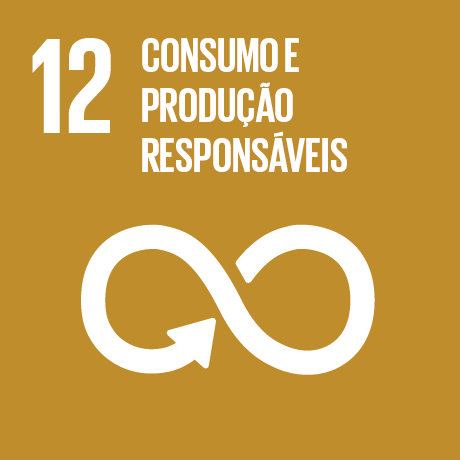
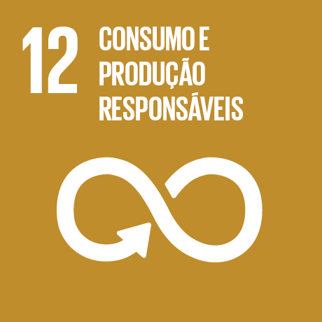

AquaGuard é um sistema de monitoramento ambiental que utiliza sensores para proteger recursos hídricos, detectando situações de risco, como poluição, e emitindo alertas para auxiliar na preservação do meio ambiente.
Somos um grupo de estudantes apaixonados por tecnologia, inovação e sustentabilidade. Unimos nossas habilidades para desenvolver soluções que façam a diferença no mundo. Nosso nome representa a união e o compromisso de cada integrante no desenvolvimento deste projeto.

 


Nossos motivos para este projeto

Barragem transborda no norte do Paraná, água invade casas e deixa famílias desabrigadas
Alagamento devido a transbordamento do Rio Iguaçu afeta abastecimento

Caixa d’água estoura e cai na Penitenciária Estadual de Cascavel; afetado no complexo

Mesmo com caixa d’água de mil litros, morador enfrenta falta de água há três dias

Vazamento de água em reservatório chama atenção de moradores em Campo Grande
O AquaGuard usa um sensor de umidade conectado a um Arduino Uno para monitorar o nível da água. Três LEDs indicam a situação: normal, atenção e crítico. Um buzzer emite um alerta sonoro quando o nível está muito baixo ou muito alto.
É como uma receita de instruções que o Arduino segue para que o AquaGuard funcione. Ele lê o nível de água (usando o sensor) e, dependendo do resultado, acende uma luz (LED) de uma cor diferente e, em casos críticos, dispara um som de alerta (buzzer).
Instale o sensor em local fixo dentro da caixa d’água e proteja a parte eletrônica contra umidade. Use fonte de energia estável, limpe o sensor regularmente e revise as conexões para garantir o bom funcionamento do AquaGuard.